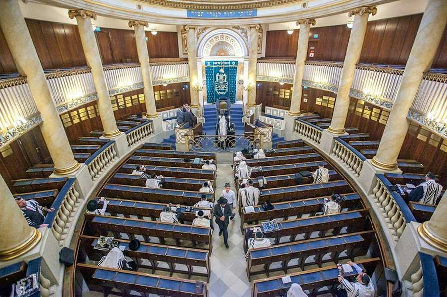

Wiener Stadttempel & Gebete
Stadttempel
Oberkantor Mag. Shmuel Barzilai
Auftritte
- Gebet jeden Freitagabend mit dem Chor des Stadttempels
- Shabbat Morgen auch mit dem Kinderchor „The Vienna Jewish Boys“
- Konzerte Jüdische Musik
- bei verschiedenen offiziellen Gelegenheiten, wie z.B. Gedenkfeier, Bar & Bat Mizwa, Hochzeit oder Begräbnis
Kinderchor
- Kinder im Alter von 7 bis 14 Jahre sind eingeladen zu singen: beim Gebet jeden Samstagmorgen und bei verschiedenen Auftritten.
- Jeden Samstag um 10.00 Uhr findet in der Synagoge eine Probe statt.
Bar & Bat Mizwa
- Vorbereitung für Bar und Bat Mizwa.
Gebetszeiten im Wiener Stadttempel August 2021
| Schacharit, Morgengebet |
Mincha, Abend |
Shabbat Ein/Aus |
||||
| Sonntag | 01.08. | 23. Aw | 08.00 | 19.00 | ||
| Montag | 02.08. | 24. Aw | 07.00 | 19.00 | ||
| Dienstag | 03.08. | 25. Aw | 07.00 | 19.00 | ||
| Mittwoch | 04.08. | 26. Aw | 07.00 | 19.00 | ||
| Donnerstag | 05.08. | 27. Aw | 07.00 | 19.00 | ||
| Freitag | 06.08. | 28. Aw | 07.00 | 19.00 | 20.13 | |
| Samstag | 07.08. | 29. Aw | 09.00 | Re`e - mewarchim |
19.50 | 21.22 |
| Sonntag | 08.08. | 30. Aw | 08.00 | Rosch Chodesch | 19.00 | |
| Montag | 09.08. | 1. Aw | 07.00 | Rosch Chodesch | 19.00 | |
| Dienstag | 10.08. | 2. Aw | 07.00 | 19.00 | ||
| Mittwoch | 11.08. | 3. Elul | 07.00 | 19.00 | ||
| Donnerstag | 12.08. | 4. Elul | 07.00 | 19.00 | ||
| Freitag | 13.08. | 5. Elul | 07.00 | 19.00 | 20.01 | |
| Samstag | 14.08. | 6. Elul | 09.00 | Schoftim | 19.40 | 21.08 |
| Sonntag | 15.08. | 7. Elul | 08.00 | 19.00 | ||
| Montag | 16.08. | 8. Elul | 07.00 | 19.00 | ||
| Dienstag | 17.08. | 9. Elul | 07.00 | 19.00 | ||
| Mittwoch | 18.08. | 10. Elul | 07.00 | 19.00 | ||
| Donnerstag | 19.08. | 11. Elul | 07.00 | 19.00 | ||
| Freitag | 20.08. | 12. Elul | 07.00 | 19.00 | 19.48 | |
| Samstag | 21.08. | 13. Elul | 09.00 | Ki Teze | 19.30 | 20.53 |
| Sonntag | 22.08. | 14. Elul | 08.00 | 19.00 | ||
| Montag | 23.08. | 15. Elul | 07.00 | 19.00 | ||
| Dienstag | 24.08. | 16. Elul | 07.00 | 19.00 | ||
| Mittwoch | 25.08. | 17. Elul | 07.00 | 19.00 | ||
| Donnerstag | 26.08. | 18. Elul | 07.00 | 19.00 | ||
| Freitag | 27.08. | 19. Elul | 07.00 | 19.00 | ||
| Samstag | 28.08. | 20. Elul | 09.00 | Ki Tawo Slichot 22.30 Uhr |
19.15 | 19.35 |
| Sonntag | 29.08. | 21. Elul | 08.00 | 19.00 | 20.38 | |
| Montag | 30.08. | 22. Elul | 07.00 | Selichot | 19.00 | |
| Dienstag | 31.08. | 23. Elul | 07.00 | Selichot | 19.00 |
visitors@ikg-wien.at Gebetszeiten
Morgengebet: Montag – Freitag 7.00 Uhr
Sonntag 8.00 Uhr
Shabbat 9.00 Uhr
Mincha und Maariv Gebet: täglich
Jeder/Jede StadttempelbesucherIn, der/die Nicht-IKG-Mitglied ist, muss sich mindestens 3 Tage vor dem beabsichtigten Synagogenbesuch mit Passkopie und Telefonnummer anmelden: visitors@ikg-wien.at
Bitte bringen Sie aus Sicherheitsgründen einen Lichtbildausweis mit und planen Sie Zeit für die erforderlichen Sicherheitskontrollen ein.
Morgengebet: Montag – Freitag 7.00 Uhr
Sonntag 8.00 Uhr
Shabbat 9.00 Uhr
Mincha und Maariv Gebet: täglich
Jeder/Jede StadttempelbesucherIn, der/die Nicht-IKG-Mitglied ist, muss sich mindestens 3 Tage vor dem beabsichtigten Synagogenbesuch mit Passkopie und Telefonnummer anmelden: visitors@ikg-wien.at
Bitte bringen Sie aus Sicherheitsgründen einen Lichtbildausweis mit und planen Sie Zeit für die erforderlichen Sicherheitskontrollen ein.